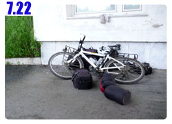

歡迎光臨俄羅斯
這一次我終於沒有因為要進入新的國家而失眠，相反的，在哈薩克的最後一覺睡得超香甜，早上都快要爬不起來。
睡前唯一會讓我有一點掛心的就是天氣，夜裡還在嘩啦啦的下雨，要是睡醒依舊陰雨綿綿的話，那這個第一天還真是慘澹的開始。
幸好睡醒之後雨已經停了，但是雲層很厚，大概只是休息時間，等等還要繼續下雨的樣子。
本來打算一大清早五點去通關，結果因為賴床而沒有付諸實現，也還好沒真的這樣作，因為關卡並不是真的二十四小時開放。
早上離開旅館的時候本來想再去加油站吃頓早餐然後才通關，想一想覺得這樣好像太悠哉了一點，畢竟俄羅斯的關卡出了名的刁難，
我應該抱持著戒慎恐懼的心態去通關，而不是吃撐了肚子悠閒的通關，雖然沒有任何理論根據，但是餓肚子應該比吃飽還要容易一點過關吧。
早上七點半開始，進行通關的考驗，第一步，要先離開哈薩克，也就是出境。
車子排隊的長度只有一輛，非常的冷清，直接進入關卡的地方，查看護照，蓋出境章。
國境不能拍照，這是基本常識，嚴重的話是會被抓去關的，但是哈薩克這邊好像比較寬容一點，海關人員主動讓我拍照作紀念。
哈薩克的出境跟入境一樣，行李沒有任何的檢查，只嚴肅的問了我一句『你有沒有攜帶海洛英？』，當然是沒有，怎麼可能帶了還老實跟你講。
問完這個問題之後就放行了，然後要排隊去照相，很倒楣剛好遇到遊覽車通關，所以排很多人，半小時後才搞定。
照完相再過最後一道閘門就算離開哈薩克了，但是還沒有入境俄羅斯，所以現在是處於什麼地方我也搞不清楚，應該就是國界的那條『線』吧。
要進入俄羅斯的關卡則是排了好長的車陣，因為俄羅斯的關卡早上八點四十分才開放。
要是我真的一大清早五點就來通關，那麼可以出境哈薩克沒問題，可是要在寒風中苦等俄羅斯的關卡開放。
對了，今天很冷，溫度只有二十度，風又很大，吹個不停顯得更加的冷，不過才差幾公里而已，就有哈薩克的溫度和俄羅斯的溫度之分嗎？
明明才七月下旬，正是夏天最炎熱的時候，俄羅斯這個北國，寒風還是那樣的刺骨。
站在關卡面前，吹著冷颼颼的風等著通關，再次強調，這邊是不能拍照的，如果有人學我這樣愛拍照到時候被抓去關我不負責喔。
我之所以會知道關卡八點四十分開放，是和我一樣在排隊等通關的司機們跟我說的，他們都是俄羅斯人，人都很好。
一開始看到他們在休旅車裡頭吹暖氣很溫暖的樣子超級羨慕，後來他們就下車跟我聊天。
利用等待的時間和他們學了三句俄文，『你好』、『謝謝』、『再見』，這樣應該就夠用了，其它到時候有用到再慢慢學。
腦袋裡面預想著等等通關之後我要做的事情，先到國境的大城市換盧布，然後找書店買俄羅斯地圖，接著吃點東西。
沒有錢就不能在俄羅斯旅行啦，哈薩克的國境居然沒有換錢的地方，身上還剩下一萬多塊的堅戈不知該如何處理。
我拿出中文版的哈薩克地圖講解過去這一個月我走的路線，有一個駕駛到他的車上拿一本精裝的地圖集過來，順便請我說明俄羅斯的路線怎麼走。
看到這一本地圖真是讓我流口水呀，我就是想買這樣子一本可以翻閱的，不用一大張摺來摺去，到最後都變得破破爛爛。
而且這一本地圖比例尺很詳細，點跟點還有標示距離，不僅俄羅斯，連烏克蘭、波蘭，一路騎到法國的地圖，這一本通通都有。
心裡期盼著等等到了城市我也要買像這樣的優良地圖，簡單說明完畢路線之後，好心的駕駛就說這本地圖送給我。
哇～！如此實用的大禮，連讓我『假裝不好意思、把地圖還回去表示心領了』這樣的假禮貌我都直接跳過。
將地圖抱在胸前，用剛學會的俄文道謝，真是太幸運了，一大早就遇到好心人，還拿到一本這麼棒的地圖，今天是個好的開始。
八點四十分，關卡準時開放，汽車先行，海關人員叫我在原地等，罰站十分鐘之後才叫我過去，給我一張入境表格填寫。
分為AB欄，A欄是入境用的，B欄填寫完之後要保管好，一直到出境時還得交回去，萬一弄丟會很麻煩。
表格填寫好就牽著小多往裡頭走，又是另外一個大關卡，因為這邊汽車可以通行，所以不像一般的海關那樣都是在室內移動。
牽著小多的我走在國境看起來非常的醒目，靠近國門之後又被別的海關人員叫過去，
海關人員都用無線電在聯繫，一直聽到無線電傳出：『台灣』、『單車』這樣的單字。
想必是在交接我的事情，猜想是說多關照我一下，幫助我順利通關，而不是要刁難我。
小多靠著路邊放，拿著剛剛填寫的表格和護照到建築物裡面去，這邊就比較像一般的海關，看看證件、問點問題，然後蓋上入境章，搞定。
回到小多旁邊，海關人員沒叫我走，我一步也不敢動，乖乖站在原地等著再度被召喚。
兩個人，一男一女走過來，叫我把全部的行李都打開，要徹底檢查。
哇～終於讓我等到這一天了，不然每次都不檢查行李，很沒有通關的緊張刺激感。
將包包一個一個的卸下來，然後拉開拉鍊，行李一件一件拿出來，簡單的講解這是什麼並給海關人員看過。
他們真的看得很仔細，還會檢查包包裡有沒有暗袋，最後又問了同樣的問題，『你有沒有攜帶毒品？』
再度揮手說沒有，開玩笑，就算有也不能跟你講，海關人員指著我的頭巾，說這是大麻葉子的花色。
有沒有搞錯，當初挑頭巾的時候有那麼多花色可以選，我偏偏要挑這一條大麻葉子的，整個也太準了吧。
包著這條頭巾，不知道的人，比如說我，只覺得花色還蠻好看的；知道這是大麻葉子的人，就會覺得此地無銀三百兩，戴在頭上也太囂張了一點。
行李被徹底檢查過之後就放行啦，繼續往下一個關卡走，最後一道門只需要查看一下護照，確認B卡在我手上，就可以讓我走了。
我指著閘門外面，問海關人員說『過了這閘門就是俄羅斯？』此時我的表情一定笑得很賤，可惜我自己看不到。
本來以為入境俄羅斯會被刁難到無以復加的地步，結果還算輕鬆的就通關了，不怎麼難搞嘛～俄羅斯我來啦！
通關期間為了表示尊敬，一路上都用牽車的，早上九點半，通關之後終於可以跨上小多開始騎車。
一進入俄羅斯就是逆風，心情還在喜悅狀態，所以沒怎麼受影響，慢慢的往第一個城市騎過去。
地圖雖然幸運的入手了，但是換錢的事可不能拖，肚子已經餓得咕嚕叫，城市還有一段距離，先吃蛋糕墊肚子吧。
多了這一本地圖之後，這是現在低頭會看到的畫面，硬殼的精裝本沒辦法摺疊，所以有點大本，但還放得下就是了。
到城市的路上告示牌都只有俄文，一句英文也沒有，非常的有俄羅斯的風味，除非美國的道路告示牌也標示俄文，不然俄羅斯也不會有標英文的一天。
好加在我有地圖可以參照，不然這些告示牌就真的看也看不懂了。
進城之後搜尋著銀行的看板，還算蠻順利就找到了，換了一些錢當生活費。
俄羅斯盧布和台幣有點接近，1盧布：1.3台幣，所以買東西的時候可以用花台幣的習慣去思考，物價的水準則要一兩天後才會習慣。
換錢的時候我拿出剩下的哈薩克堅戈，問行員這個能不能換？
結果居然不行！一出哈薩克，金錢馬上變成廢紙，銀行不給換，商店也不收，嘆氣～
早知道就在出境前買一堆的蛋糕、餅乾、巧克力，把錢通通花光，現在留著就沒有用處啦。
換到盧布之後就可以去商店買東西了，第一次花不同國家的錢都會有點興奮，好像花的不是錢，而是某種神奇的符咒紙。
為了填飽肚子，買了一瓶水和一大條麵包，麵包的價錢依然很便宜，但味道太平淡，口感則很厚實，買一條當存糧就不至於會餓死。
錢換好了就可以離開城市準備今天的騎乘，一條麵包邊騎邊吃，等我覺得吃不下的時候已經剩沒幾口了。
半路再到加油站繼續採買零食，巧克力棒好吃又能恢復熱量，一口氣買六條，冰涼的牛奶冰淇淋也吃了兩個。
今天要向北邊騎，但因為逆風的關係，騎起來很慢，明天才能到大城市，在那邊要左轉，然後一口氣向西邊騎兩千公里抵達莫斯科。
騎車的時候就一直在比較哈薩克跟俄羅斯的差異：
哈薩克的公車等候站比較堅固、漂亮，俄羅斯的都是鐵皮屋，有些連屋頂都沒有，只有露天的一張長椅和垃圾桶。
俄羅斯的路況比較好，道路平整，維護得也很好，還有金字塔可以欣賞。
哈薩克駕駛雖然瘋狂，但是跟俄羅斯駕駛相比，簡直是小巫見大巫，俄羅斯駕駛根本都是不要命的在開車。
俄羅斯的路上不時就會看到巡邏的警車經過，這讓單車旅行的我感到心安許多，哈薩克都沒看到這樣的巡邏車。
哈薩克的房子比較鄉村一點，俄羅斯即使是在郊區，房舍也都蓋得很漂亮，不會顯得破舊，整體建築規劃得也很賞心悅目。
俄羅斯的天氣好冷，一點都不像夏天，天氣跟哈薩克一樣多變，整天都是下雨、晴天這樣交替著變化。
下午四點半，肚子餓，同時天空看起來很不妙，烏雲加閃電，依照過去的經驗，先躲起來避風頭比較好。
找了一間餐廳吃今天的正餐，點了烤牛排、咖啡，配餐則是三角肉餡餅、很薄的烤餅和麵包，還有紅蘿蔔泡菜。
吃的味道算尚可，咖啡味道很糟，價錢則又比哈薩克貴了不少，如果想省錢看來只有多吃一點麵包，少上餐廳吃飯。
吃飯的時候其它桌的客人邀我過去喝酒，喝的當然就是俄羅斯的名產，伏特加。
這種酒危險的地方在於，喝醉的人也聞不到酒味，只能用肉眼去判斷對方醉了沒。

在哈薩克被喝醉的人弄得很不爽，到了俄羅斯希望喝酒的人酒品好一點。
今天遇到的還算不錯，不會跟我扯一些五四三的，還說要請我吃飯，和跟我交換禮物，握手也是握個沒完，可以歸類成友善的一派。
本來我在這邊是要吃飯兼躲雨，結果那片烏雲怎麼也不下雨，反而出大太陽，等吃飽了才下起毛毛雨，真是難以捉摸的天氣。
吃飽後上路繼續騎，還有八十幾公里，雖然不累可是覺得有點膩，想找地方落腳，第一天輕鬆一點，不要騎太拼外加露營。
眼前看到十五公里外有旅館，一小時能騎到的距離，冒著小雨騎過去。
進城後發現這裡還挺大的，找旅館找到差點迷路，問了人才發現原來根本就找錯地方。
旅館蓋得很偏僻，不是在市區，而是像工業區的地方，旅館本身也不像旅館，這根本就是一棟公寓呀。
但是看到這樣的裝潢和招牌我反而很開心，豪華氣派對我來說是沒有意義的，只有一個字『貴』。
像這樣的旅館住宿價錢絕對貴不到哪裡去，滿懷著信心進去問價錢，馬上就被老闆娘的俄文攻勢打得節節敗退。
我說聽不懂俄文她也不管我，劈里啪啦就是講一長串，連價錢都不告訴我，而且好像不願意讓我住在這邊，搞得我一頭霧水。
後來才知道住宿之前第一件事情不是問價錢，而是要將護照拿出來，這是最基本的。
拿出護照接下來就容易多了，登記身分、領回一張住宿表、繳三百元的住宿費(就說了一定很便宜)，這間房今晚就是我的啦～
可惜不能洗熱水澡，只能用冰水擦擦身體，降低一下要求其實也還過得去，連自來水都沒有的旅館也住了好幾次，這裡算方便的了。
俄羅斯的第一天，我覺得盧布花起來有點薄，開車的人太兇狠，俄文很難懂，吃飯很貴，天氣很冷。
畢竟才第一天，漸漸就會習慣，接下來還有一個月呢～放輕鬆，歡迎光臨俄羅斯。
繼續閱讀：7.22 現在進行式

俄羅斯-盧布－ 1：1.3 台幣
7.21 |
總計：602元 |
商店水、麵包23元、巧克力六條84元、冰淇淋兩個10元、晚餐牛排、咖啡、麵包 、三角肉餡餅、薄餅185元、旅館300元 |
|